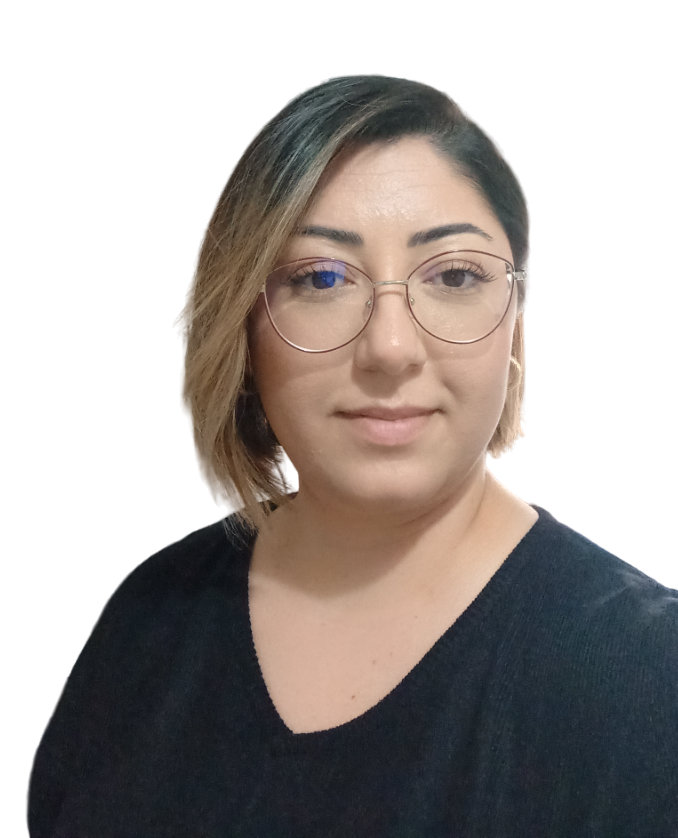

Sibel Süer

Summary
I graduated from the Department of Geological Engineering,
but I have been working as an Occupational Safety Specialist
in a company related to Occupational Health and Safety for 9 years.
I am taking trainings to become a Web Developer and I want to do
projects in this field.
Education
- Geological Engineering-Master's Degree-Istanbul University-(2013-2017)
- Geological Engineering-Istanbul University-(2008-2012)
Diploma Equivalecy Recognized by ZAP, Germany
Work Experience
- Class C Occupational Safety Specialist-CAN OSGB, Istanbul
Feb 2016 - on going
- I serve both Hazardous and Less Hazardous workplaces
- I have prepared separately taking into account the hazard classes and
I use training presentations that I take care to keep up to date
- I try to pay attention to documentation by making active visits
- I attach great importance to always staying in touch with the consulting companies.
- Geological Engineer/Class Occupational Safety Specialist-Barit Maden Turk A.S., Istanbul
Feb 2014 - Feb 2016
- Both the search for new mines in the field and the reserve position of existing mines,
- To make the reserve amount calculation study
- I worked both as a Geological Engineer and as an Occupational Safety Specialist.
Skills
- Customer relations
- Microsoft Office Suite
- Solution-oriented
- Time management
Award and Certification
- The Complete 2024 Web Development Bootcamp-Angela Yu(August,2024)
- Basic level Python training-BTK Acedemy(June,2024)
- Autocad-Bilgi TeknojileriAcademy(November,2010)
- CorelDRAW-Google(June,2011)
- Zero to summit English education set-UDEMY(July,2024)
- Systematic German course(A1-B1)-UDEMY(June,2024)
Other